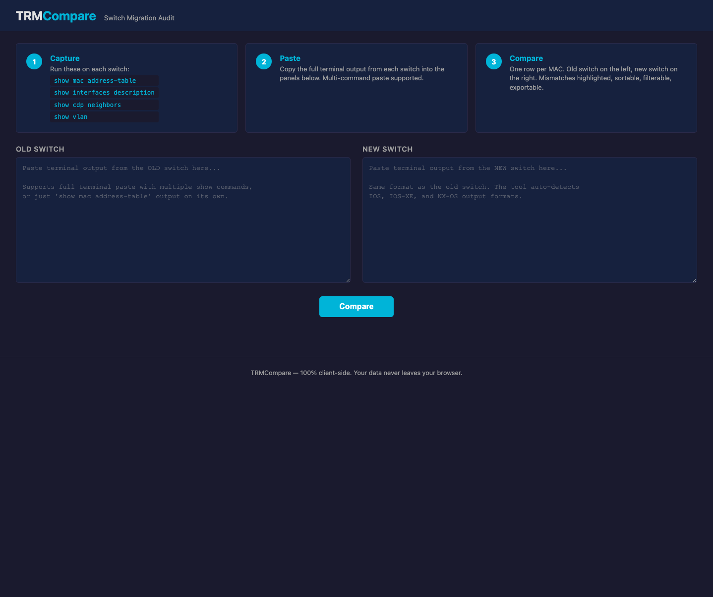
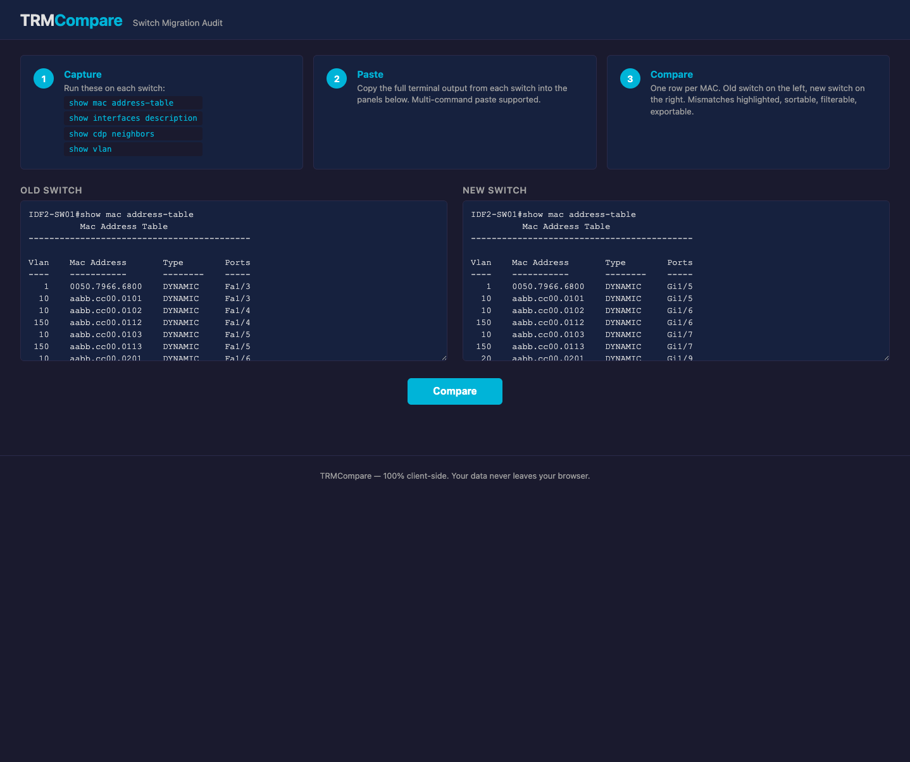
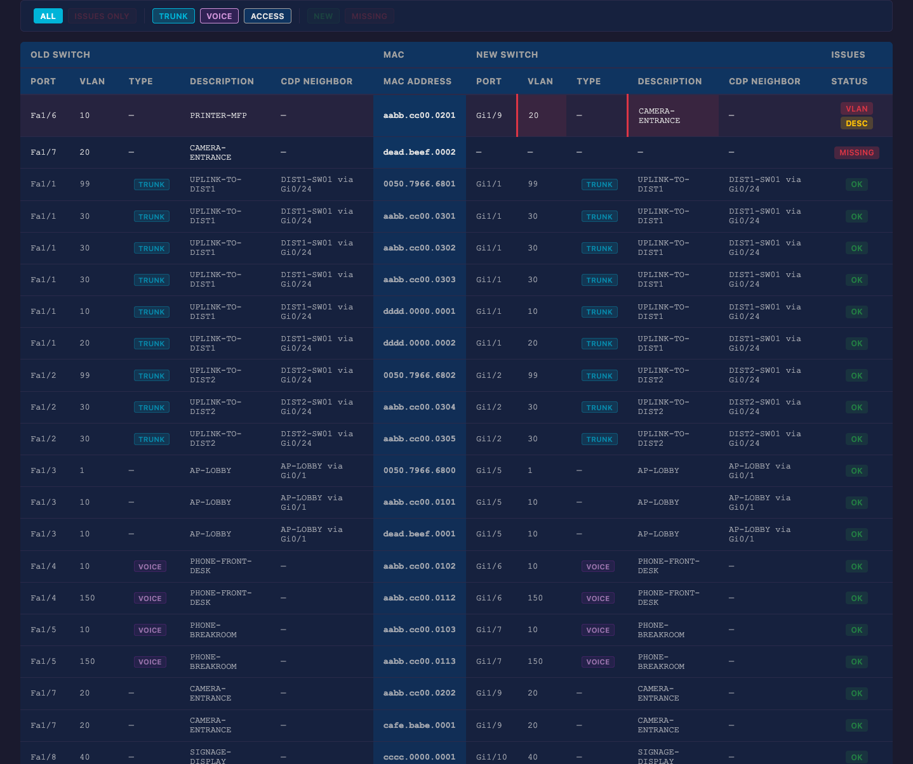
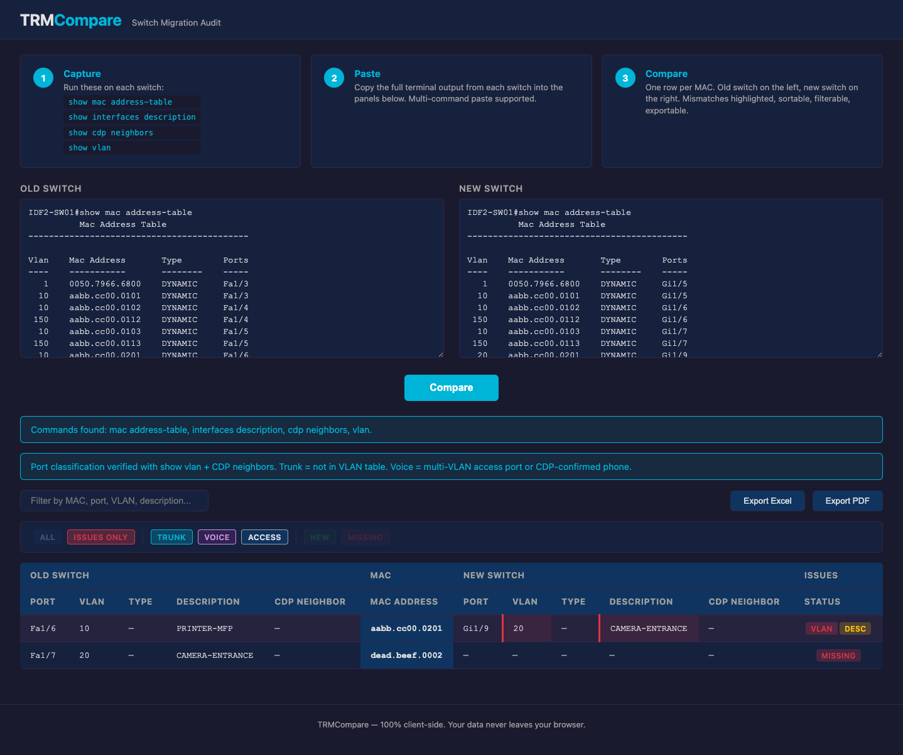

Swap a switch, move the cables, paste the output. TRMCompare shows you exactly what moved, what's missing, and what landed on the wrong port — in seconds.
Two panels. Old switch on the left, new switch on the right. The commands you need are listed right there — no guessing.

Copy everything from the hostname# prompt. Multi-command paste supported — just dump your whole terminal buffer.

One row per MAC address. Old switch data on the left, new switch data on the right. VLANs, descriptions, CDP neighbors, port types — all compared automatically.

One click hides all the OK rows. Now you're looking at just the problems: wrong VLAN, wrong port, missing device. Fix the cable, move on.

A device that was on VLAN 10 (DATA) but ended up on VLAN 20 (SECURITY) after the migration. Wrong port, wrong config, or wrong cable.
A camera, phone, or printer that was on the old switch but didn't show up on the new one. Unplugged, powered off, or forgotten.
MACs that appear on the new switch but weren't on the old one. Could be a device that came online during the migration window.
The interface description says "PRINTER-MFP" but the MAC landed on a port labeled "CAMERA-ENTRANCE". Something's cross-wired.
An access port device ended up on a trunk port, or a voice port lost its voice VLAN pairing. Trunk/Voice/Access classification uses multiple data layers for accuracy.
The CDP neighbor on a port changed between old and new. Useful for catching uplink wiring errors on distribution switches.
Your switch data never leaves your browser. No server, no account, no telemetry. Run it on an air-gapped network if you want.
No npm, no build step, no framework. One HTML file, vanilla JS, and two bundled libraries for Excel/PDF export. That's it.
Supports Cisco IOS, IOS-XE, and NX-OS output formats. Handles multi-command paste with automatic command detection.
One-click export for documentation, change management records, or handing off to the next shift.
TRMCompare is free and always will be. If it saved you time on a migration, consider buying me a coffee. No pressure — just good karma.
Sponsor on GitHub